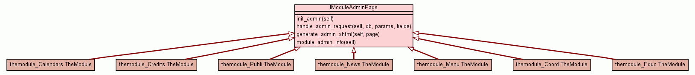

Trees
Indices
Help
CoMFoRT
Package modules
::
Module module_interfaces
:: Class IModuleAdminPage
[
hide private
]
[
frames
] |
no frames
]
Class IModuleAdminPage
source code

Instance Methods
[
hide private
]
init_admin
(
self
)
source code
handle_admin_request
(
self
,
db
,
params
,
fields
)
source code
generate_admin_xhtml
(
self
,
page
)
source code
module_admin_info
(
self
)
source code
Trees
Indices
Help
CoMFoRT
Generated by Epydoc 3.0.1 on Sun May 25 15:42:36 2008
http://epydoc.sourceforge.net